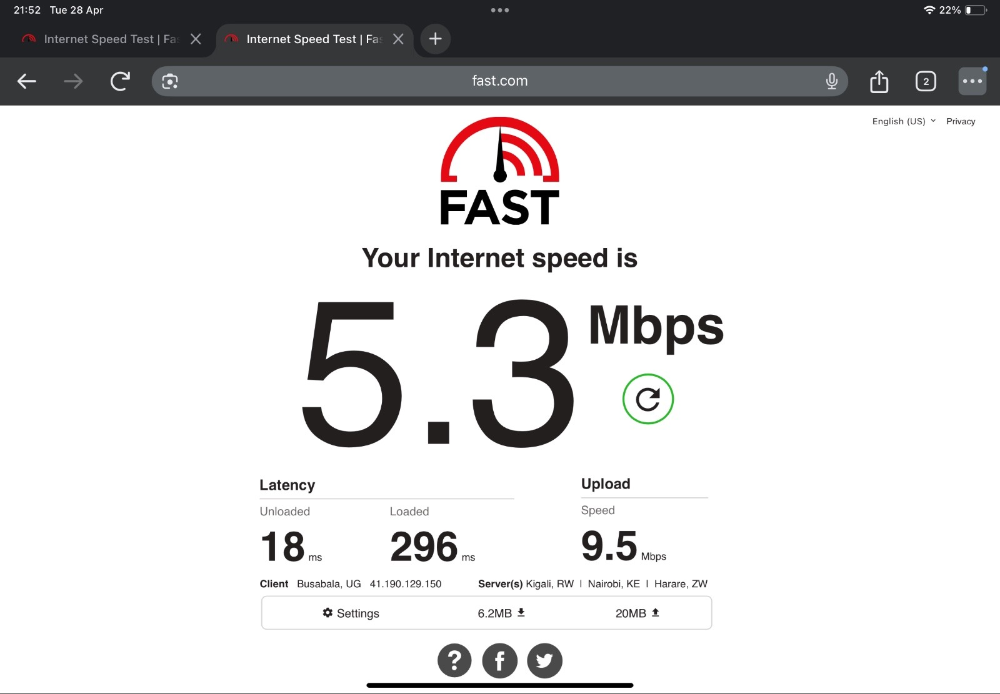
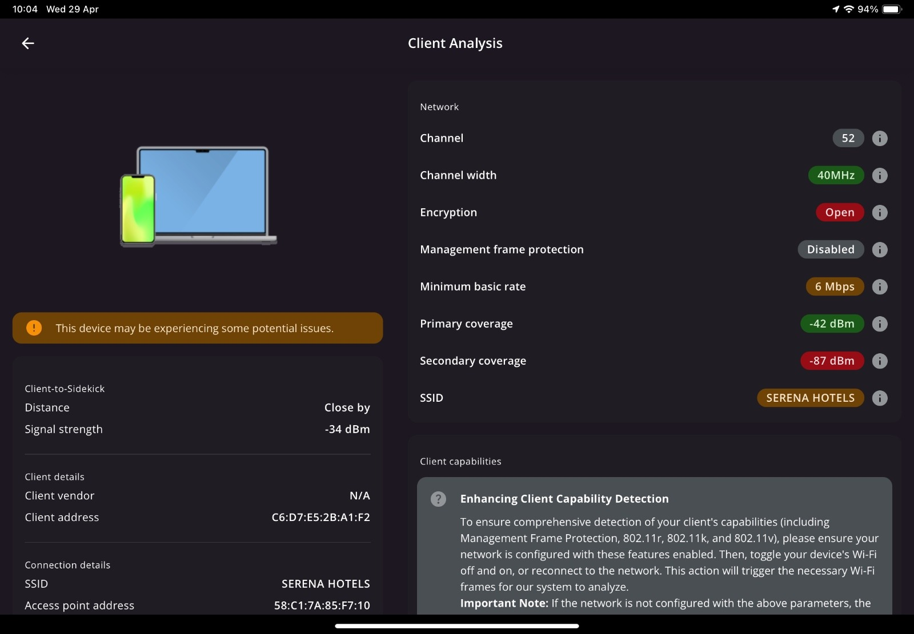
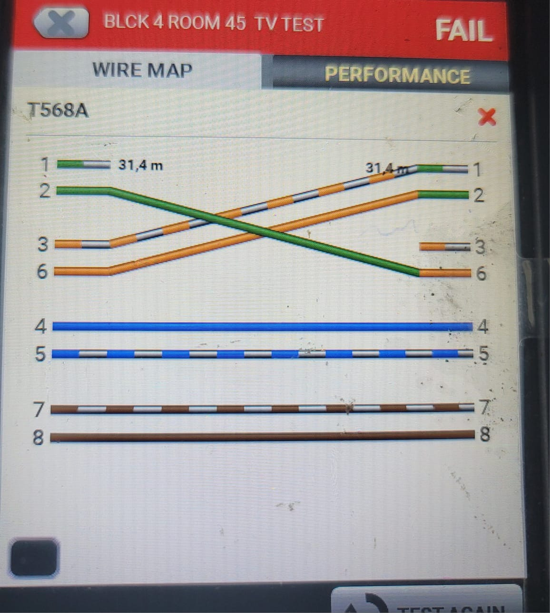
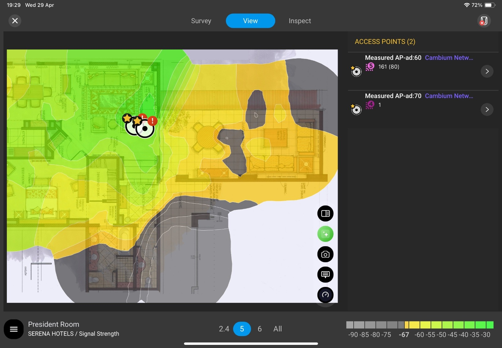
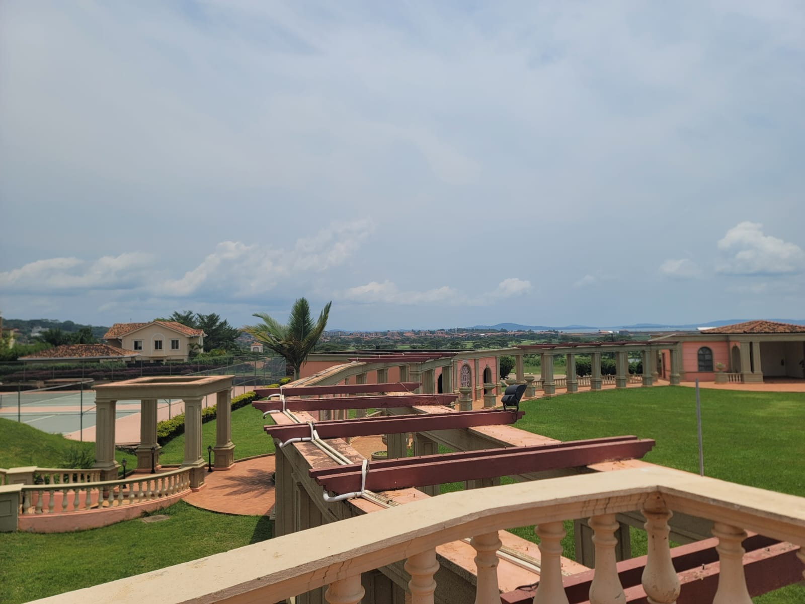
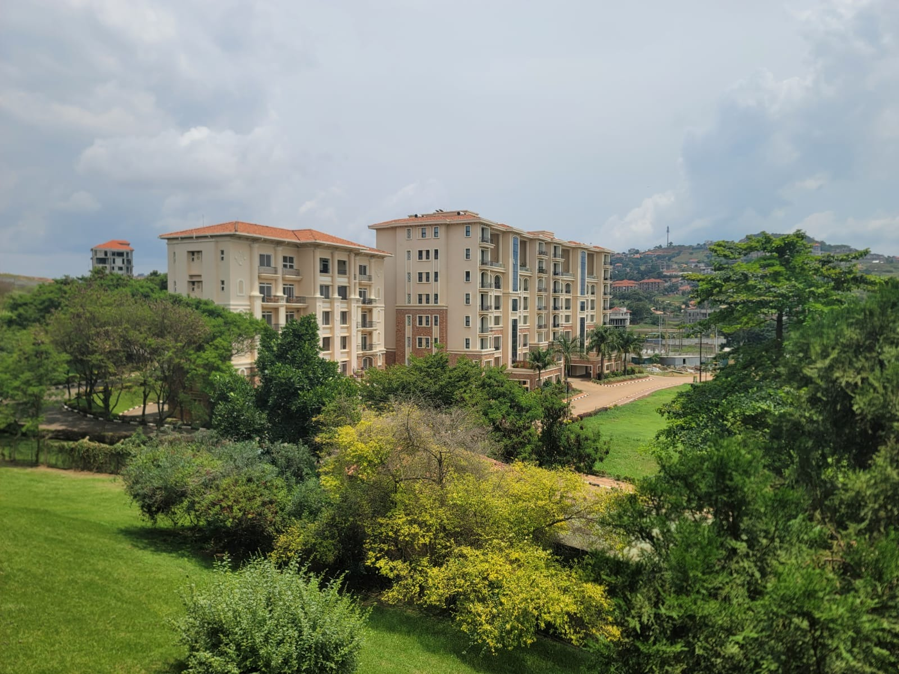

Survey-led ICT planning and project development
I have supported hospitality ICT surveys for Serena properties, combining site assessment, wireless analysis, network infrastructure observations and technical recommendations to provide practical information for project design and commercial teams.
The survey outputs help translate existing site conditions and identified requirements into proposed infrastructure, equipment quantities and BOQ inputs for network upgrade and improvement projects.
My Involvement
Technical surveys supporting design and sales
Site Assessment
On-site assessment of existing ICT infrastructure, physical conditions, network areas and requirements affecting proposed works.
Wi-Fi Surveys
Wireless assessment using Ekahau to review signal strength, coverage, SNR and channel utilization and identify areas requiring improvement.
Network Infrastructure Review
Review of existing network infrastructure including IDFs, fiber links, gateways, DHCP environment, UPS condition and network equipment observations.
Testing & Verification
Technical verification and cable testing to identify infrastructure conditions, faults and requirements that need to be considered in the project scope.
Technical Recommendations
Documenting observations and practical recommendations to guide proposed network upgrades and infrastructure improvements.
BOQ Support
Providing survey findings and technical requirements that assist project designers and sales teams in developing proposals and populating BOQs.
Project Gallery






Engineering Scope
Survey Output & Project Value
The surveys provide a technical view of the existing environment and help identify infrastructure gaps, wireless coverage requirements, equipment needs and other implementation considerations before an upgrade or deployment is proposed.
These findings support project designers and sales teams when preparing technical proposals, determining quantities and populating BOQs, helping align commercial proposals with observed site requirements.